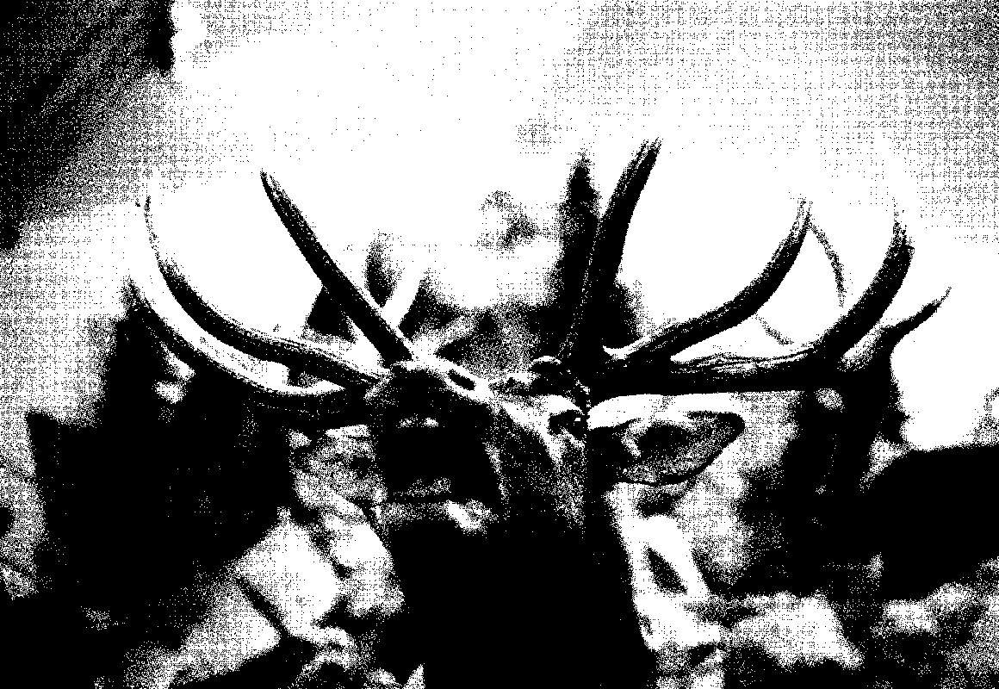

The First Day
Okefenokee Swamp, Georgia — Tar Lake
Okefenokee Swamp, Georgia — Sometime Hole
Okefenokee Swamp, Georgia — Sometime Hole
My first time ever in the Deep South, the very first day. At the crack of dawn in the Okefenokee swamp, a week after a massive wildfire. I have just returned from Japan for a project on the destruction of Hiroshima and Nagasaki by the atomic bomb.
Somehow it feels like a seamless transition. Personally I detest nature. I recognize its beauty but it makes me feel uneasy. It's not the presence of animals or physical danger that bothers me, but the absence of points of reference, the human scale—at least my human scale. To me nature represents death.
Okefenokee Swamp, Georgia — Sometime Hole
Okefenokee Swamp, Georgia — Suwannee Canal
Okefenokee Swamp, Georgia — Sometime Hole
Okefenokee Swamp, Georgia — Suwannee Canal
Okefenokee Swamp, Georgia — Suwannee Canal
In Georgia it's prohibited to sell alcohol on a Sunday. You're allowed to visit gun-shows and porn shops but you can't buy a beer.
Folkston, Georgia
Topophobia (Fear of Place)
Kraemer, Louisiana — Atchafalaya Swamp
Kraemer, Louisiana
“we thought the place was u nike one of a kind, everyday people like us. making a living an showing people the cajun way. not fake and fonny like other places trying to be what there are not. what you see is the bayou, gators, and the swamp, no city life there, real country people. an a way of life. rates are ok, an the food the food is worth the drive. great... we had fun an know you will too....”
—William N. Thibodaux, Louisiana, tripadvisor.com
Since no one else wishes to see alligators being fed marshmallows on a bleak Tuesday morning I get a private boat tour into Bayou Boeuf. The slightly retarded second cousin who will be my guide can't stop looking at my chest. The trip lasts for two hours. Back at the hatchery I get to hold a baby gator.
Paradoxia
*Sexual desire at the wrong time of life [Krafft-Ebbing] or a genus of algae.
Kraemer, Louisiana
Kraemer, Louisiana
Natchez, Mississippi
After waiting for two hours for a 4-wheel drive to pull me out of the mud on my way to Rodney, Mississippi, I decide to wait out the debilitating rain and spend the night at an overpriced hotel in Natchez.
I had visited the remote and slightly sinister ghost town of Rodney before, but men in a pick-up truck had chased me away. Hunters probably... I had found a shack full of antlers, hides and dead stuff hanging from a pole to dry. Someone must have warned them about me snooping around, threatening to steal their kill. And indeed I had picked up a dismal little antler for my collection of artifacts but no way was I going to confront four potential murderers so l jumped into my car and drove off—and got lost in the dusk because after seven miles the path ended in a fallow field.
This year I'm playing it safe so I wait for the land to dry. But this time my GPS directs me from the country road to a dirt road to an overgrown path to a creek only partially covered by a collapsed bridge. I consider that the second warning. Writing this down I realize it was the third.
In Natchez I run into not one, but two Dutch couples, one black and one white, what are the odds... They're unacquainted but feel equally uneasy about driving through the impoverished South and a bit intimidated by my solitary adventure. The white man turns out to be a huge Jerry Lee Lewis fan and I tell him The Killer's sister Frankie Jean Lewis Terrell lives right across the river - just an hour's drive into Louisiana - running a Pik-Quick Drive Thru liquor store. Maybe it's for the best that his wife doesn't dare to cross the Mighty Mississippi because when I finally find the place the store is closed and Frankie Jean has just left town.
Jerry is a full cousin of Jimmy Swaggart, the televangelist who was caught with a prostitute and tried to struggle back up via a tearful "I HAVE SINNED!" on television. His church kicked him out anyway. I attended a service at the mega-church in Baton Rouge once to see his son preach. Members of the congregation who felt touched by the Holy Ghost jumped up and down and spoke in tongues.
Very disturbing.
At the Natchez EXXON gas station I meet George and spend half an hour talking to him. This makes me feel considerably better.
Great Smoky Mountains, Tennessee / North Carolina
Great Smoky Mountains, Tennessee / North Carolina
Franklin, North Carolina — Wilderness Taxidermy and Wildlife Museum
Nostalgia (Fear of Future)
Westminster, South Carolina — Battle of Oconee
The reenactment starts at 8 a.m. with storytelling by the women. The man with the rugged wooden cross says a prayer and assures us that although no black man is present that doesn't necessarily mean were racists—in fact we are going to say another prayer just for them right away! After tossing a coin about who will have to represent the Northerners the men start firing canons. They seem to thoroughly enjoy the deafening noise which only stops at 5 p.m. My black-clad appearance doesn't sit too well with the participants.
The day before at the gun show the Nazi-paraphernalia-dealing white supremacist declared that the Schwarze at the White House was a pussy for letting Europe get flooded by Muslims. He made it sound strangely exciting.
Westminster, South Carolina — Battle of Oconee
Westminster, South Carolina — Battle of Oconee
Clinton, Tennessee — Museum of Appalachia

(Planetary Aviation Evangelist Past and Present)
When one handles venomous snakes there are two options: they bite or they don't. And if they do there are two options: you die or you don't. And that's the Will of God.
On my way to the snake-handling church in the Eastern Tennessee Appalachian Mountains I get more and more edgy. I'm not afraid of snakes; however, people who are so devoted to Jesus they are willing to sacrifice their lives are completely alien to me because faith like that defies reason. It took me weeks of research to find this place; the unwavering faithful practicing the Old Time Religion are not likely to warmly welcome nosy photographers. Or have a website. Besides, in most states it's an outlawed practice so these people tend to be a little secretive.
Three trailer homes and a sign that reads:
Tabernacle Church of God
Pastor A. H.
Fri 7:30
Sun 11:00
It is Sunday, 11 a.m. and the site is deserted. I don't know which is stronger: my disappointment or my relief.
On my return I visit the Museum of Appalachia (Let the past touch your soul): an extensive collection of local paraphernalia and artifacts, spread out over 36 cabins, barns and sheds. Every single item has a handwritten tag that explains who made what, where and why. Sort of wonderful and boring at the same time. The pinnacle of their collection is the white coat of Henry Harrison Mayes (1898-1986) on which he drew 278 crosses, representing the number of Christian denominations he was aware of. In his heyday this self-proclaimed preacher erected hundreds of concrete crosses all over Tennessee but intended to expand his territory to the moon and planets. For this he built a special bicycle.
Clinton, Tennessee — Museum of Appalachia
New Orleans, Louisiana — City Park
Thanatophobia (Fear of Death)
Rodney, Mississippi — Ghost Town
Carlton, Alabama
"Hey li’l girl, you from Flor’da?" My rental car has a Sunshine State license plate and I'm 47 at the time. I am lost again, trying to locate a derelict Baptist Church cemetery hidden somewhere in a muggy forest. It's a sweltering 102 degrees Fahrenheit. I want to photograph the concrete headstones fabricated by an inventor born in the 1880s who, according to local lore, also built a perpetual motion machine. The 88-year-old Vietnam veteran insists on leading the way on foot, although the path proves to be more unruly than anticipated and a tiring half mile long. He says he needs the exercise but I think he's too shy to sit next to me. At the graveyard he paints a picture of Miss Lily's pet hog escaping and creating quite a stir, back in '54.
Paradoxia
*O’Death is probably a "lowering song"—one that would be sung as the body was lowered into the grave.
O'Death
What is this that I can see
With icy hands taking hold of me
I am death and none can tell
I open the door to heaven and hell
Oh Death, O Death,
Please spare me over till another year
Death oh Death, consider my age
Please don't take me in this stage
My wealth is all at your command
If you would move your icy hand
Oh Death, O Death,
Please spare me over till another year
No wealth no land
No silver nor gold
Nothing satisfies me but your soul
Oh Death, O Death,
Please spare me over till another year
Mother come now to my bed
Put a cold towel upon my head
My head is warm my feet is cold
Death put his shackles on my soul
Oh Death, O Death,
Please spare me over till another year
Death oh Death please let me see
If Christ has turned his back on me
God's children pray, His preachers preach
The time of hope is out of reach
Oh Death, O Death,
Please spare me over till another year
Henderson, Louisiana
Tuscumbia, Alabama — Seven Springs Lodge
A hilltop in the middle of timber country, northern Alabama, gloomy pinewood as far as the eye can see. B. A. and her boyfriend C. insist on taking me to the coon dog cemetery, just a couple of miles away. This of course means more than a half-hour drive from the solitary cabin I had rented near the Rattlesnake Saloon. C. keeps spilling his drink of bourbon and Mountain Dew over the tombstones while collecting nickels for cigarettes. He only picks up heads; tails would bring accident and sorrow. I can't help thinking maybe one shouldn't steal from graves to begin with.
Back at the cabin the only sound I hear is gunshots.
Copperhill, Georgia
Pratville, Alabama — The Cross Garden
Fantastic, apocalyptic and sad like a graveyard - which of course it is. In the garden you'll also find W.C. Rice's parents' grave, right in front of the hen house. Damnation alerts (HELL IS HOT HOT HOT) are painted on hundreds of crosses and a large number of household appliances. As W.C.'s health deteriorated he started preaching from his La-Z-Boy recliner. I read somewhere that the place is for sale for 5 million dollars, CA$H. Its location, next to a trailer park, won't help its marketability much either.
Pratville, Alabama — The Cross Garden
Fantastic, apocalyptic and sad like a graveyard - which of course it is. In the garden you'll also find W.C. Rice's parents' grave, right in front of the hen house. Damnation alerts (HELL IS HOT HOT HOT) are painted on hundreds of crosses and a large number of household appliances. As W.C.'s health deteriorated he started preaching from his La-Z-Boy recliner. I read somewhere that the place is for sale for 5 million dollars, CA$H. Its location, next to a trailer park, won't help its marketability much either.
Pratville, Alabama — The Cross Garden
Fantastic, apocalyptic and sad like a graveyard - which of course it is. In the garden you'll also find W.C. Rice's parents' grave, right in front of the hen house. Damnation alerts (HELL IS HOT HOT HOT) are painted on hundreds of crosses and a large number of household appliances. As W.C.'s health deteriorated he started preaching from his La-Z-Boy recliner. I read somewhere that the place is for sale for 5 million dollars, CA$H. Its location, next to a trailer park, won't help its marketability much either.
Pratville, Alabama — The Cross Garden
Pratville, Alabama — The Cross Garden
Pratville, Alabama — The Cross Garden
Pratville, Alabama — The Cross Garden
Point Blank, Texas
On my way back from Austin, Texas to visit Old Sparky (the electric chair that killed Bonnie and Clyde) I took a three-hour detour just to see what a village that's called Point Blank looks like.
Point Blank, Texas
Glossolalia
Glossolalia, are utterances approximating words and speech, usually produced during states of intense religious experience. The vocal organs of the speaker are affected; the tongue moves, in many cases without the conscious control of the speaker; and generally unintelligible speech pours forth. Speakers and witnesses may interpret the phenomenon as possession by a supernatural entity, conversation with divine beings, or the channeling of a divine proclamation or inspiration. Various psychological interpretations have attempted to explain glossolalia scientifically as an unconsciously suggested behaviour arising from participation in a mass religious gathering
The Sixth Day
Seale, Alabama
I spend the evening drinking Blue Moon and moonshine on the hood t b.'s truck, listening to the white-bearded man hollering a prayer through the open doors. The man ("Let me say that thanks to the grace of God Almighty and the support of my friends and customers I have lived to hunt again") not only sells guns and houses, he's a part-time preacher and santa Claus too. After a couple of sips of shine even / have a southern drawl.
Seale, Alabama
Tallahassee, Florida Panhandle — Leon Sinks Geological Area
At this very spot I realize I'm not scared of nature anymore; the bugs are killing me though. As I learn later that's because I ate a banana for breakfast—the only edible thing in most hotels and apparently a bug magnet.
Apalachicola, Florida Panhandle Crawford, Alabama
Crawfordville, Florida Panhandle — Ford Cemetery
Yazoo City, Mississippi
The girl at the counter of the decrepit motel is missing a couple of teeth. She gives me a discount of $5, just to be nice. At my offer to share a beer she announces that she's been sober for seven months, three days and eight hours.
The next day at the Gonzalez, Louisiana gun show a sturdy police officer throws me out because I am taking photographs. I argue that it's more obscene to shoot animals than pictures but she seems to hate everything about me so it's no use. I can't stop laughing.
New Orleans, Louisiana — Holt Cemetery
The Seventh Day
Atlanta, Georgia
I have talked to a lot of people. Or rather, a lot of people have talked to me and the thing that stands out is an overwhelming sense of confusion. Many are hurt because of an unsafe childhood—physical, sexual and emotional abuse seems to be common. Poverty, limited education, strong religious notions and twisted sexual ethics cause couples to have babies too young and they are unprepared to bear the responsibility of maintaining a relationship and raising a child. They marry, get divorced and move to the other side of the country to start a new life. And make new babies. Those children are lonely and confused and prone to make the same mistakes. All these broken families...It's very sad.
I want to stress that all things I've written so far are nothing but personal observations, derived from my subjective and biased, leftish, secular European education and background. Maybe because society in the South is harsh and complex Southerners tend to be strongly opinionated and outspoken. So am I and I enjoy that, however—if anything—I have learned that between black and white all shades are present and relevant and everything in life is endlessly nuanced.
The Southern weird and wonderful is not easy to find. One must get off the interstate and travel the dirt roads to explore the nooks and crannies of an area that is filled with industrial plants, suburbs and basically very ugly architecture, just like the rest of the United States. No wonder school children shoot at their peers. I would maybe do the same if I had to spend my life in cheap, unhealthy and utterly soulless buildings. I also had to acknowledge a certain deeply rooted apprehension: a fear of the unknown. Not only of unfamiliar nature but also of unfamiliar people. It took me a while to get acquainted with it all, but when I did I found the most resilient, hospitable, charming and wonderful bunch you'll ever get to meet, with a huge capacity to cope and hope, against all odds. Their lust for life is monumental; it's this quality that affects me most and makes me love 'em to death.